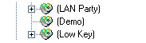

· What is the best way to organize and listen to my music?
(Entry last updated on April 18th, 2002)The player lets you select music in several different ways. It's very flexible, and its system of hierarchical playlist "trees" allows you to organize your music into very unique and personalized groups. There are also features which let you search the player, as well as features which let you filter the music based on predefined criteria.
The player can be simple, too. There's no need to get complicated about it if you don't want to. Simply throwing a bunch of songs onto the player and shuffling it will work just fine. If that's all you ever want to do, then you don't need to read any further. But if you have a vast music collection, the player's advanced music organization features are there to help you find specific types of music or specific songs as quickly as possible.
Because the player is so flexible, there is no single "best" way to organize the music on the player. Mess around with its features and come up with something that works well for you. For example, it's easy to rearrange the playlists in Emplode, so make sure to try different kinds of playlist structures until you like what you've got.
Now, having said that, here is a description of how I use my player on a daily basis. It seems to be a fairly common way of using it, and it's a good starting point for further experimentation.
In my player's root Playlists folder, I have a bunch of playlists named after each artist. Beneath those, I have album playlists. Like this:

Some people like to split up their root playlist into more tree levels. For example, starting with different genres at the top level instead of the artists. That's a perfectly valid way to do it, too. I prefer to have a "flatter" playlist structure, though, so that I don't have to navigate as many levels when I'm fishing through the playlist tree. So I put my artists at the top.
Note that in a future release of the software, we won't even need to create Artist/Album playlists any more, those will appear automatically as part of the Soup Views.
There are many other ways you could organize your playlist structure. For example, if there is a lot of Classical music in your collection, you might want to create playlists organized by composer, as well as by conductor and by orchestra. The main thing to keep in mind is that you should be able to navigate these playlist trees with a minimum of effort. So do whatever you feel is easiest to control when you're using the player's front panel.
In the root directory, I also have some "mood" playlists. For example, some of my mood playlists are:

Note how I enclose the names of these mood playlists in parentheses. The parentheses are there for two reasons: First, to make them stand out from the rest of the artist playlists. Second, the parentheses are a trick to make them fall "first" alphabetically so that they appear at the beginning of the Playlists menu on the player. Square brackets or hyphens would also work well for this purpose.
In practice, I hardly ever dig into the playlists tree. Usually, I play the contents of the entire player, shuffled by Least Recently Played. When this shuffle mode is activated, I select and play the root playlist simply by pressing "down down down" on the player's front panel.
When I'm shuffling the entire player like this, the "next track" button gets used a lot. When a new song starts, if it's not the most perfect song for my mood at the time, I press Next until I get to one that is. Note that I'm not usually skipping the song because I dislike it (there isn't a lot of stuff on the player I dislike), I'm skipping it because it's not absolutely perfect for my mood at that exact time. Usually it takes only a few "skips" before a song comes up that I want to hear. (Do that with a CD changer, heh.)
Note that exessive track-skipping is often annoying to passengers in your car. To prevent this, I recommend using "mood" playlists when you've got passengers, or simply resisting the urge to hit the skip button.
Now, at this point, there are probably a lot of purists screaming about how it's sacrilege to listen to certain songs without hearing the rest of the album to go with that song. That's OK, the player handles albums just fine, too.
If I'm shuffling, and I hear a song that happens to fit well within an album, I can press the "0" button on the remote control. This unshuffles "around" the current song, so that I'm dropped into the middle of that album. For instance, if I'm shuffling the whole player and "Money" comes up, I press "0" and can listen to the remainder of Side Two of Dark Side of the Moon uninterrupted. See this entry for more details about how to make the player unshuffle like this for you.
If I decide I want to listen to a specific album off the top of my head, I can easily turn off shuffle and go fish for the album in my playlists tree. Note that the remote control can be used as a quick shortcut to specific alphabet letters when scrolling through the Playlists menu. For instance, I can press the 7 key ("PRS") twice to reach the R's to play a Rush album.
Some people make extensive use of the player's PIN feature to access specific playlists or songs. I don't do this, but the feature is there if you want it.
If I'm shuffling the whole player, and I simply want to hear more of a given artist/album without regard to the song order, I use the Tweak Order feature to queue up more songs by that artist. For example, if I hear a song by Carla Ulbrich, I can press the "2" button on the remote control a few times, and it will queue up a few more Carla Ulbrich tunes.
If there is a specific song that I want to play, I use the Search by Title feature, set to "Insert" mode. Searching is described in the manual, but also make sure to read this and this for answers to a couple of common questions about searching.
I have some stuff on my player that I don't want to appear in a "down down down" shuffle, so I use either Wendy Filters or the Ignore As Child tag to handle those situations.
Use these ideas as a starting point for learning about the player's features. You'll soon come up with your own way of organizing your music that works the best for you.
|